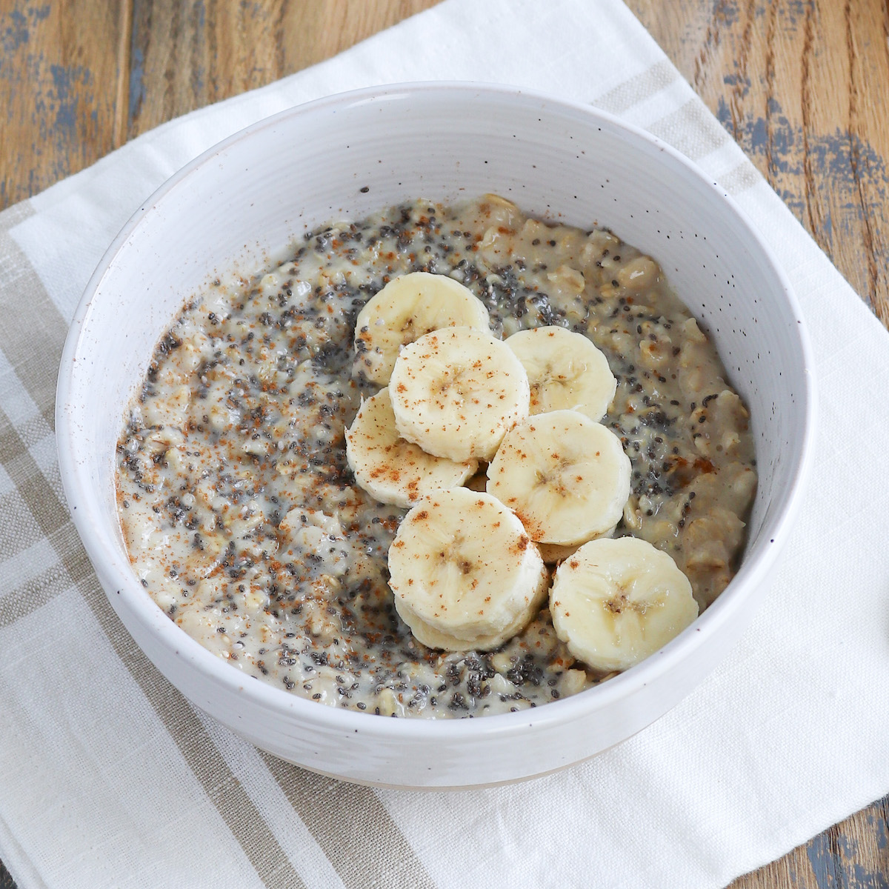

Protein Oatmeal

Peanut Butter Banana Protein Oatmeal
This is a 5 min protein oatmeal recipe. It is topped with chia seeds, flax seeds, peanut butter, and banana.
Ingredients
- 1/2 cup oats
- 1 cup almond milk
- 1 scoop protein powder
- 1 tbsp peanut butter
- 1 tbsp chia seeds
- 1 tbsp flax seeds
- 1 banana
- 1/2 tbsp cinnamon
Steps
- Combine oats, almond milk, and a dash of salt then microwave for 2 minutes.
- Mix in the rest of the ingredients and top with banana slices.